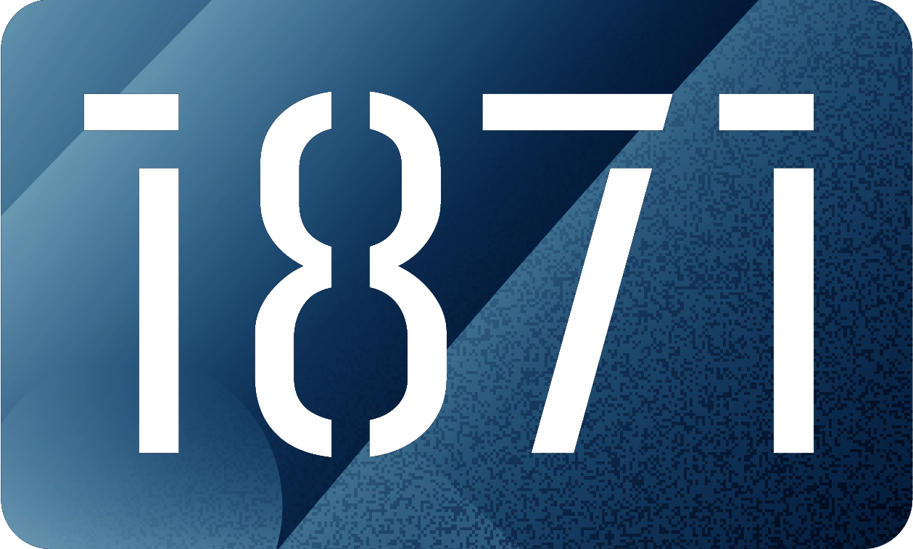

Education Experience
Rose-Hulman Institute of Technology
Masters: Engineering Management
Bachelors of Science: Software Engineering
Minor: Artificial Intelligence
Reflecting on my time so far at Rose, I am filled with lots of positive memories. I came in expecting to leave with an Engineering degree, and now I believe I'll also be leaving with so many skills and memories I never would have imagined. From developing people skills through my experience in Residence Life, the management skills learned through my Masters program, and the countless late-night conversations with people who have shaped who I am today Rose is unlike any other university. Each day I get a chance to wake up and learn more about the industry I will have a chance to impact one day, develop myself as a person more, and see some of the most impactful people I will ever meet. Through all of the fun, I still get the opportunity to learn from professors from different walks of life, all excited to teach me and my fellow students their craft. Walking through each step of the Software Design process while learning about the cutting edge of technology through my Artificial Intelligence classes is preparing me more than I could have ever expected.Lowell Senior High School
While I wasn't able to dive into Software as much as I would have liked in High School, this was my opportunity to develop the parts of myself that now help me destress. I developed a love for music, my passion for sports, and learned how much I cared about helping other people.Work Experience

Resident Assistant
Rose-Hulman Institute of Technology
Top Skills: Time Management, Communication, Conflict Resolution
Resident Assistants at Rose are different. Here, we focus on truly forming a community on our floors. Through hosting countless events, relentlessly checking on residents, and finding ways to add some extra fun into an engineering degree, it is one of the most rewarding positions I have ever held. Through mentoring 2 Sophomore Advisors and 30 freshmen, I have watched myself grow a lot.
Sophomore Advisor
Rose-Hulman Institute of Technology
Top Skills: Organization, Resiliency, Communication
Sophomore Advisors are fairly unique to Rose - it's a position similar to Resident Assistants expect they tend to focus more on building community than having fun. Being able to plan events all around campus that have various scopes really grew a lot of my management skills.
Operation Catapult Counselor
Rose-Hulman Institute of Technology
Top Skills: Planning, Teamwork, Flexibility
Working a summer camp is a great opportunity to work on being able to work with others, and this is especially awesome at Rose. There were multiple instances of plans falling through working with other people around campus or due to the weather, giving me opportunities to learn how to bounce back and make things work.
EIT Audio Visual Technician
Rose-Hulman Institute of Technology
Top Skills: Planning, Problem Solving
In working for EIT, I am able to help support different events across campus for all of their audio needs. Often times, this includes communicating with the event planners and my supervisor to understand how I can help. From there, I will often need to find ways to make that solution fit within the environment of the event.Shift Manager
Arby's
Top Skills: Leadership
As a high school worker, I was able to keep working my way up the ladder and gain some valuable leadership experience through management. Starting my shifts after classes and working through a successful shift, often achieving some of the best numbers on staff while working to overhaul product tracking to reduce waste.
Umpire
Official Finders
Top Skills: Confidence
This was my first opportunity to work alone, and I believe it helped me shape my experiences now. Being a sports official forces you to build some confidence throughout calls, and nothing helps cultivate that more than having the opportunity to run games alone.Extra Curriculars
Pi Kappa Alpha
Interfraternity Counsel Rush Executive
Through Greek Life I have gain opportunities to grow in leadership opportunities, find ways to give back to the community, and get to know people from multiple backgrounds. Additionally, I got the opportunity to help lead rush and help find ways to make the experience better for freshmen to find their place on campus.
